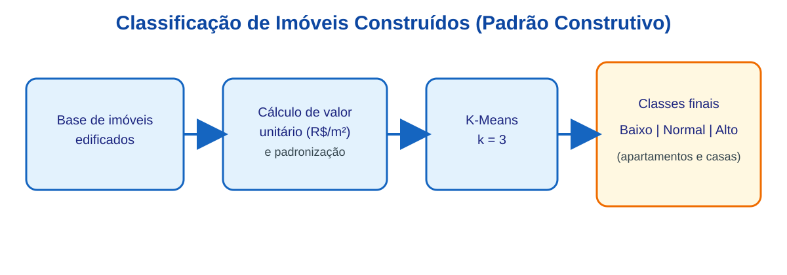
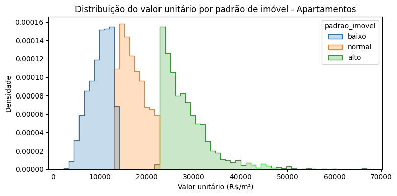
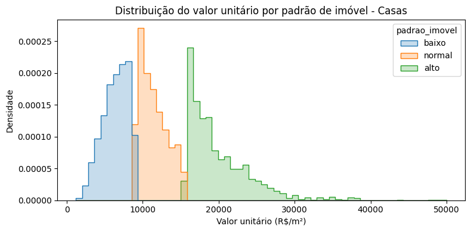
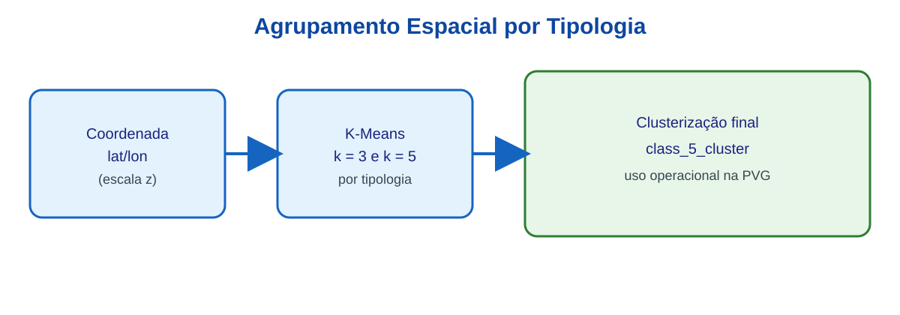
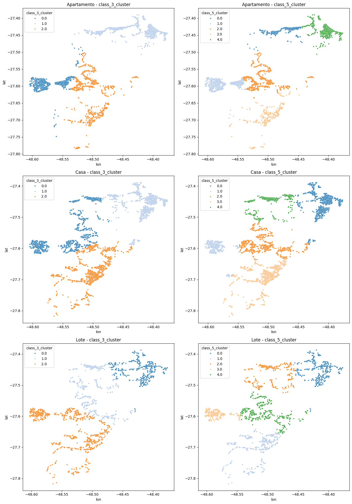

flowchart TB
A("RECEBIMENTO DOS DADOS DAS ETAPAS 1 E 2") --> B("LIMPEZA DOS DADOS COM REGRESSÃO ROBUSTA")
B --> C(["CLASSIFICAÇÃO DE IMÓVEIS CONSTRUÍDOS (PADRÃO CONSTRUTIVO)"])
B --> D(["CLASSIFICAÇÃO ESPACIAL"])
C --> E("CONJUNTO DE DADOS DE IMÓVEIS EDIFICADOS PARA ANÁLISES")
E --> F("MODELOS DE INTELIGÊNCIA ARTIFICIAL")
F --VUM2 --> G("CONJUNTO DE DADOS DE LOTES PARA ANÁLISES")
D --> G
G --> H("MODELOS LINEARES GENERALIZADOS")
H --Resíduos --> I("KRIGAGEM")
I --> J("MODELO FINAL DE LOTES")
K["CIB"] --Dados Cadastrais --> L["CÁLCULO DO CUSTO DE REEDIÇÃO"]
J --Valores de Terrenos --> M
L --Custo de Benfeitorias --> M["ESTIMAÇÃO DO FATOR DE AJUSTE DE MERCADO"]
M --> N["ATRIBUIÇÃO DE VALORES DE REFERÊNCIA"]
F --VUM2--> M
style A stroke:#2962FF, fill:#2962FF,color:#FFFFFF
style B stroke:#2962FF, fill:#FFD600,color:#FFFFFF
style F stroke:#2962FF, fill:#FFD600,color:#FFFFFF
style E stroke:#2962FF, fill:#2962FF,color:#FFFFFF
style G stroke:#2962FF, fill:#2962FF,color:#FFFFFF
style H stroke:#2962FF, fill:#FFD600,color:#FFFFFF
style J stroke:#2962FF, fill:#FFD600,color:#FFFFFF
style M stroke:#2962FF, fill:#FFD600,color:#FFFFFF
6 ETAPA 3: Modelagem e Planta de Valores Genéricos (PVG)
6.1 Introdução
Este capítulo apresenta os resultados obtidos na Etapa de Modelagem e Planta de Valores Genéricos (PVG) para a cidade de Florianópolis/SC. Na Seção 6.2 encontra-se o fluxo de modelagem utilizado. Todos os passos constantes do fluxo de modelagem são descritos na sequência. Os resultados podem ser vistos na Seção 6.8. Nas seções 6.9 e 6.10 são descritos os principais desafios encontrados e considerações sobre a escalabilidade da solução adotada para o restante do projeto.
6.2 Fluxo de Modelagem
O fluxo de modelagem pode ser visto na Figura 6.1. Basicamente, o fluxo mostra que parte do conjunto de dados (dados de imóveis edificados) foi utilizada para prever valores de metro quadrado construído (VUM2), gerando uma variável para a localização que posteriomente foi utilizada na modelagem de valores unitários de lotes, assim como na definição do fator de ajuste de mercado.
Para a estimação de valores de metro quadrado construído, foi necessária a classificação dos imóveis edificados (casas e apartamentos) segundo seu padrão construtivo. Este procedimento encontra-se detalhado na Seção 6.4.1.
Além disso, os dados foram classificados segundo a sua localização geoespacial, conforme pode ser visto na Seção 6.4.2, visando a identificação de submercados imobiliários1.
6.3 Limpeza dos dados
Os dados oriundos do observatório do mercado imobiliário foram limpos com o auxílio de regressão robusta.
6.4 Definição de variáveis
6.4.1 Classificação de imóveis construídos (padrão construtivo)
Para a classificação de imóveis construídos, adotou-se como variável principal o valor unitário (R$/m²), calculado pela razão entre preço anunciado e área privativa. Essa escolha foi feita por representar, de forma sintética, o posicionamento econômico do imóvel e refletir diferenças construtivas observáveis no mercado.
A aplicação foi realizada separadamente para os conjuntos de apartamentos e casas, preservando a heterogeneidade entre tipologias. Em seguida, a variável foi padronizada e submetida a agrupamento não supervisionado (K-Means, com k = 3), com ordenação dos grupos pela média de valor unitário e rotulagem final em três classes técnicas:
- baixo padrão;
- padrão normal;
- alto padrão.
No contexto deste relatório, o K-Means foi utilizado para organizar observações em grupos com maior semelhança interna e maior distinção externa. O algoritmo opera de forma iterativa, alternando duas etapas: (i) alocação de cada observação ao centróide mais próximo; (ii) recálculo dos centróides como média dos elementos de cada grupo. O processo é repetido até estabilização, minimizando a soma dos quadrados das distâncias intragrupo. Como resultado, obtém-se uma tipologia objetiva de padrão construtivo, sem impor limiares arbitrários de preço.

Os histogramas a seguir apresentam a distribuição do valor unitário (R$/m²) por classe de padrão construtivo gerada pelo K-Means, separadamente para apartamentos e casas. As distribuições confirmam a separação entre os grupos: em ambas as tipologias, as curvas dos padrões baixo, normal e alto apresentam picos em faixas distintas de valor, com sobreposição controlada nas fronteiras. Essa separação valida que o algoritmo capturou com consistência a segmentação econômica dos imóveis sem necessidade de limiares definidos manualmente.
Para os apartamentos (Figura 6.3), o padrão baixo concentra-se predominantemente na faixa de R$ 5.000 a R$ 15.000/m², o padrão normal entre R$ 10.000 e R$ 20.000/m², e o padrão alto apresenta distribuição mais dispersa, com valores a partir de R$ 20.000/m² e cauda longa até R$ 70.000/m², refletindo a heterogeneidade do segmento de alto padrão em Florianópolis.

Para as casas (Figura 6.4), o padrão baixo concentra-se até R$ 10.000/m², o padrão normal entre R$ 8.000 e R$ 15.000/m², e o padrão alto acima de R$ 15.000/m². Em comparação com os apartamentos, as casas apresentam faixas de valor unitário mais comprimidas e menor dispersão no padrão alto, o que evidencia diferenças estruturais entre as duas tipologias.

6.4.2 Classificação espacial
Na classificação espacial, as variáveis utilizadas foram as coordenadas geográficas dos registros (latitude e longitude) para cada tipologia de imóvel: apartamentos, casas e lotes. Utilizando as coordenadas (escala z), foi aplicado agrupamento não supervisionado (K-Means) por tipologia.
Foram geradas e comparadas as classificações class_3_cluster e class_5_cluster em cada conjunto tipológico, com inspeção visual da distribuição espacial e da separação entre grupos. Para uso operacional no fluxo da PVG, foi consolidada a classificação final class_5_cluster, por apresentar melhor equilíbrio entre detalhamento territorial e estabilidade do tamanho dos grupos.
No agrupamento espacial, o K-Means separa zonas com comportamento locacional semelhante a partir da proximidade entre coordenadas padronizadas. Embora não substitua uma regionalização administrativa formal, essa estratégia melhora a representação da heterogeneidade espacial em cada tipologia e cria estratos técnicos úteis para os modelos de valor.


6.5 Critérios de validação adotados
6.6 Construção do modelo
6.6.1 Validação
6.7 Atividades Desenvolvidas
6.7.1 Seleção de variáveis
6.7.2 Testes de modelos
6.7.3 Calibração
6.8 Resultados
6.8.1 Modelo preliminar
6.8.2 Outputs de valor
6.9 Desafios
6.9.1 Qualidade das variáveis
6.9.2 Aderência ao mercado
6.10 Escalabilidade
6.10.1 Replicação em outros municípios
Apesar da classificação geoespacial efetuada, verificou-se que, em Florianópolis/SC, os modelos responderam bem à subdivisão dos mercados em distritos, portanto esta segmentação geospacial dos mercados foi adotada. Optou-se por manter aqui o estudo da divisão geoespacial do mercado para fins de eventual necessidade em outros municípios.↩︎